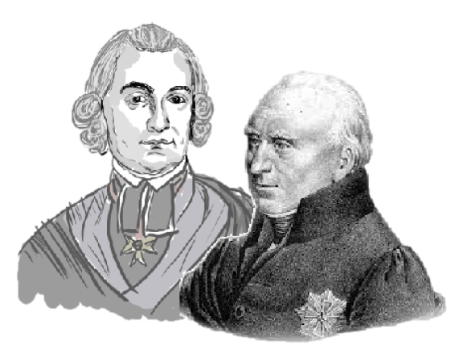

Metodycznie uporządkowane refleksje na temat natury zawdzięczamy w Polsce
przede wszystkim twórczości H. Kołłątaja i S. Staszica.

| Hugo Kołłątaj | Stanisław Staszic |
|---|---|
| Unikanie wieloznaczności i hipostazowania natury | Natura jako opozycja do cywilizacji |
| Porządek filozoficzno-moralny, 1810 | Ród ludzki, 1819-1820 |
| Deizm - zakładał, że abstrakcyjnie (a nie osobowo) pojęty bóg stworzył działającą według praw natury maszynę przyrody i od tej pory nie angażował się w jej losy. | Rozwój społeczny i postępy cywilizacji prowadzą do oddalania się od natury i jest to proces dramatyczny |
| Jest on sprzeczny z głoszonym przez Kołłątaja gdzie indziej panteizmem, czyli utożsamianiem wszystkiego (a więc natury) z Bogiem. | W niedalekiej już przyszłości sam rozwój cywilizacji doprowadzi z konieczności niejako do powrotu do „natury”. |
| Natura jest czynną, wewnętrzną zasadą bytu. Natura naturata – dla oznaczenia świata stworzonego | Im bardziej człowiek oddala się od natury tym większa szansa, że powróci na jej łono. |
| Poglądy Kołłątaja: natura jako zbiór rzeczy i praw ujmowanego dystrybutywnie, a nie całościowo (holistycznie). NATURA JEST SUMĄ RZECZY JEDNOSTKOWYCH. | Teoria jedności natury jest, zdaniem Staszica, podstawową, naczelną zasadą wyjaśniającą funkcjonowanie i istotę wszechświata. Wszystkie elementy świata są ze sobą mocno powiązane, zatem naturę traktuje się CAŁOŚCIOWO. |
| Zrozumienie świata jest możliwe bez przyjmowania bytu transcendentnego wobec natury | Świat jako skutek ma swą ontyczną relację ze Stwórcą – Pierwszą Przyczyną. |
Kołłątaj pisał: „Natura naturata dobrze podobnie brana być może za prawo fizyczne, za własności i siłę każdego jestestwa i wszystkich w ogólności. Gdybyśmy zaś chcieli brać świat za tę siłę, która jest natura naturata, byłoby to nadużycie wyrazu, bo świat nie może się uważać jak jestestwo oddzielne względem swoich cząstek, lecz jak zbiór jestestw, z których każde i wszystkie razem podlegają prawom fizycznym. Porządek więc, podług którego wszystkie skutki łączą się w jeden łańcuch, nie jest siłą pojedynczą, ale zbiorem wszystkich sił i skutków szczególnych, które się z sobą łączą i tym sposobem tworzą jedną całość świata. Nie można więc wprowadzić żadnej siły pośredniczącej między Pierwszą Przyczyną i jej prawami".
Zdaniem Staszica przyczyna powszechnych zmian świata
tkwi w samej
naturze:
"Ten świat, wszystko, co istnieje i odmienia się, poczyna i kończy się, powstaje i ginie, to
wszystko jest skutkiem. Utajona, ale konieczna Przyczyna. Skutek przyczyny swojej poznać
nie może, ale każdy skutek z swoją przyczyną mieć stosunek musi. Przez ten stosunek
wszystko w Pierwszej Przyczynie łączy się"